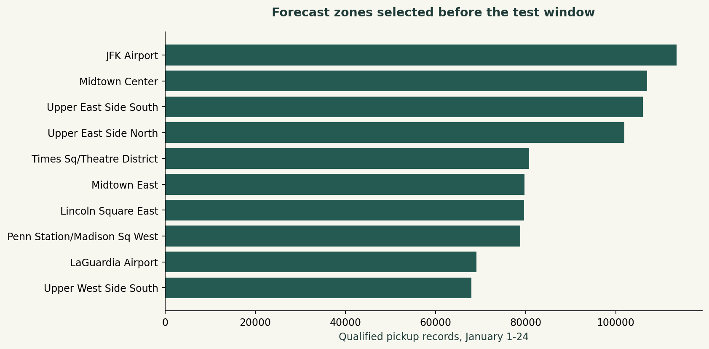
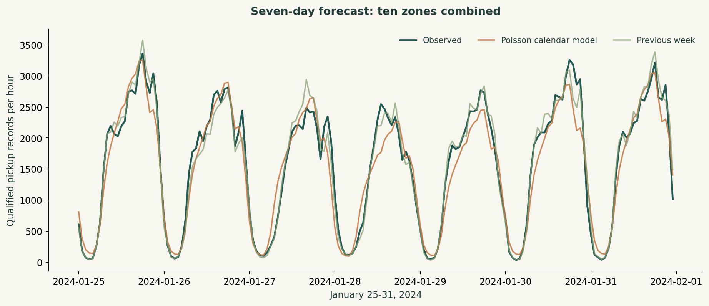
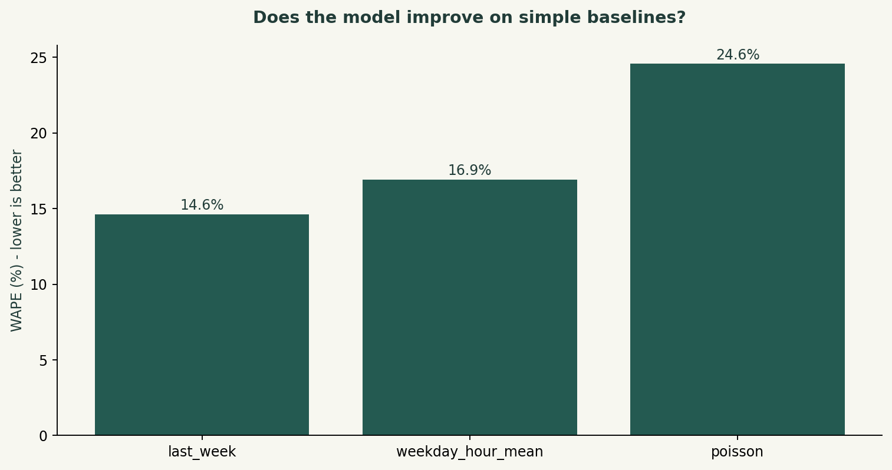

DANIEL UMEADI / SQL + PYTHON
Taxi demand and operating patterns
NYC yellow taxi records · January 2024 · Zone-level SQL analysis and a seven-day Python forecast
Decision to support
Identify pickup patterns for dispatch planning and test whether a calendar model improves a simple weekly planning baseline. Supply, idle time and unmet demand are not available, so no profit-maximizing dispatch policy is claimed.
Findings
2,914,490 records meet the date, positive-fare and known-pickup-zone criteria. JFK Airport leads the ten zones selected from January 1-24 training data. On January 25-31, the best of the three reported methods is last_week with 14.6% WAPE. The Poisson model records 24.6%, compared with 14.6% for the previous-week baseline. All errors are calculated at zone-hour level before aggregation.
Method
DuckDB joins taxi zones, creates a separate operational subset, ranks routes and builds a complete 744-hour grid for each selected zone. The Poisson regression uses zone, hour, weekday and zone-hour categories. The entire final seven days are held out. Zone selection and baseline means use training data only. No test observations enter prediction features.
Recommended use
Start with the best simple baseline indicated by the comparison and validate it on additional months before adoption. Use the hourly profile for staffing discussions, then add vehicle availability, travel time, weather and events. Track zone-level forecast error and service outcomes before claiming an operational improvement.
Limits and data decisions
The file contains reported records, not verified unique trips; no trip ID exists, so identical rows are not silently removed. Demand counts exclude nonpositive fares and unknown pickup zones, but do not impose distance/duration filters. A stricter 1-180 minute, 0-100 mile positive-total subset is used for operational comparisons. These analyst-chosen thresholds are documented and audited. Tips recorded for credit-card payments do not capture cash tips. Total amount includes charges and is not driver profit. This is one winter month and one holdout; the lowest test error is a descriptive comparison, not a guarantee. Local timestamp fields are treated as NYC wall time.




Backtest metrics
| model | mae_records_per_zone_hour | rmse | wape | signed_bias_share |
|---|---|---|---|---|
| last_week | 23.301 | 37.112 | 0.146 | 0.001 |
| weekday_hour_mean | 26.975 | 40.458 | 0.169 | -0.037 |
| poisson | 39.159 | 55.749 | 0.246 | -0.037 |
High-volume routes
| pickup_zone | dropoff_zone | records | median_minutes | p90_minutes |
|---|---|---|---|---|
| Upper East Side South | Upper East Side North | 21615 | 6.800 | 11.950 |
| Upper East Side North | Upper East Side South | 19176 | 7.400 | 12.533 |
| Upper East Side North | Upper East Side North | 14938 | 4.133 | 7.417 |
| Upper East Side South | Upper East Side South | 13933 | 4.967 | 9.500 |
| Midtown Center | Upper East Side South | 10134 | 8.367 | 14.783 |
| Lincoln Square East | Upper West Side South | 8813 | 5.833 | 9.400 |
| Upper East Side South | Midtown Center | 8712 | 8.217 | 14.248 |
| Midtown Center | Upper East Side North | 8660 | 12.367 | 20.117 |